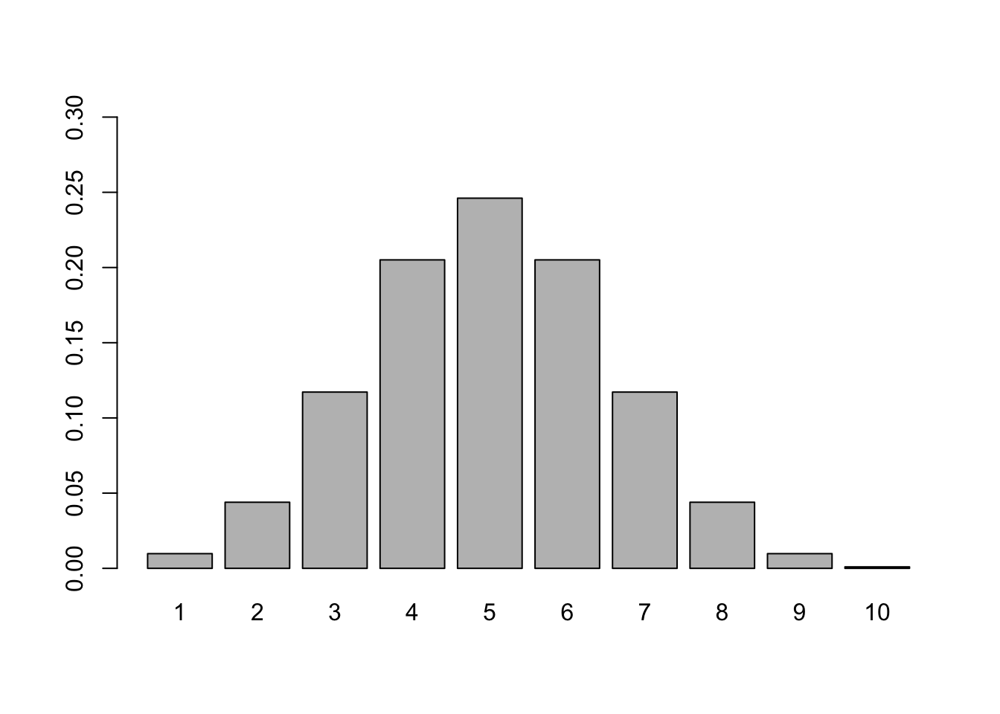

Chapter 3 Confidence Interval
3.1 Poll Simulation
# This example illustrates how to calculate the probability of having 50 out of 80 people supporting the Legalization of Medical Marijuana in Minnesota.
# Note to find probability of other values, you should make some changes.
Prob50 <- factorial(80) / factorial(80-50) / factorial(50)*(0.5)^50*(1-0.5)^(80-50)
Prob50## [1] 0.007338263.2 Poll P-value
# This example shows how to calculate P-value of having 50 out of 80 people supporting the Legalization of Medical Marijuana in Minnesota.
numberTrial <- 80
parameter <- 1/2
probability <- function(n, x) {
factorial(n) / factorial(n-x) / factorial(x)*(parameter)^x*(1-parameter)^(n-x)
}
# create a dataframe for saving the probability of different number of people supporting the Legalization of Medical Marijuana in Minnesota.
distvector <- vector('numeric',length = 11)
for (i in 0:80){
distvector[i+1] <- probability(80,i)
}
disPoll <- as.data.frame(cbind(seq(0,80),distvector))
head(disPoll)## V1 distvector
## 1 0 8.271806e-25
## 2 1 6.617445e-23
## 3 2 2.613891e-21
## 4 3 6.796116e-20
## 5 4 1.308252e-18
## 6 5 1.988544e-17# Plot the distribution
barplot(dis$distvector,ylim=c(0,0.1),names.arg = dis$V1)
# find P-value
pValue <- sum(distvector[51:81])
pValue## [1] 0.016496313.3 Calculate Confidence Interval
# This section shows how to calculate Standard Error and Confidence Interval for the proportion of people supporting the Legalization of Medical Marijuana in Minnesota.
# 1. Find the Standard Error
obsProportion <- 0.8
sampleSize <- 80
SE <- sqrt((obsProportion*(1-obsProportion))/sampleSize)
SE## [1] 0.04472136# 2. Find the upper and lower bound for the 95% confidence interval
upper <- obsProportion+qnorm(0.975,mean=0,sd=1)*SE
lower <- obsProportion-qnorm(0.975,mean=0,sd=1)*SE
ConfidenceInterval <- cbind(upper,lower)
ConfidenceInterval## upper lower
## [1,] 0.8876523 0.7123477